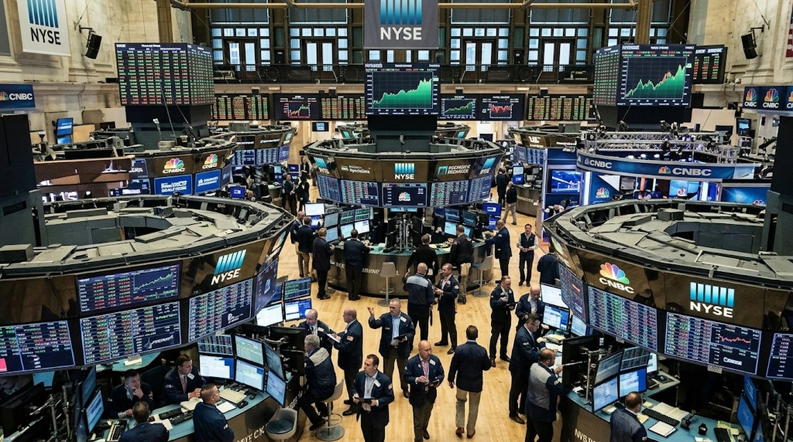

Morgan Stanley Turns Bullish on Stocks After Selloff, but the Earnings Test Is Still Ahead
Morgan Stanley sees a buying opportunity after the selloff, but earnings, rates and AI spending remain key risks.

Morgan Stanley has turned more optimistic on US equities after last week’s sharp selloff, arguing that falling valuations and deeply negative investor sentiment have created an opportunity to buy. The shift is notable because the bank’s tactical equity stance is now its most bullish since April. But the call rests on a crucial distinction: markets have become more pessimistic about future corporate profits than Morgan Stanley believes company fundamentals justify. Related context: Brookfield to Acquire PGP Glass From Blackstone for $1.7 Billion Related context: Global Stocks Lose Nearly $9 Trillion as AI Valuations and Rate Fears Collide
A research team led by chief US equity strategist Mike Wilson described the recent decline as an overshoot rather than evidence of a deterioration in the underlying economy or corporate earnings. The bank said equity prices were reflecting an expected 6% contraction in 2027 earnings, while its own forecast points to growth of 14%. The broader analyst consensus is more optimistic still, at approximately 17% growth.
That gap is central to the investment argument. If company earnings continue to expand, the market may have discounted too much bad news. If earnings forecasts are cut further, however, current valuations could prove less attractive than they appear.
The report was published on Monday, November 23, after the S&P 500 and Dow Jones Industrial Average had entered correction territory during Friday’s trading. The selloff followed weeks of pressure on technology and artificial intelligence shares. Investors had become increasingly concerned that the enormous capital commitments behind AI infrastructure might not produce returns quickly enough to justify the valuations and borrowing required to build it.
Morgan Stanley’s position challenges the assumption that the decline in technology shares necessarily signals a broader deterioration in corporate profitability. The bank sees opportunities not only among hyperscale cloud companies but also in industrial businesses and higher-quality cyclical stocks. Those groups could benefit if economic activity remains resilient and earnings growth broadens beyond a narrow group of technology leaders.
The distinction between a valuation reset and an earnings recession matters for portfolio construction. A correction driven mainly by lower valuation multiples can create opportunities for investors with a longer horizon. A correction driven by falling profits is more difficult: even companies that appear inexpensive can become cheaper as earnings estimates decline.
Morgan Stanley’s comparison between market pricing and its earnings forecast suggests that investors have moved toward the second scenario more quickly than the bank considers justified. The 6% contraction implied by market pricing is materially below the bank’s projected 14% increase. Yet the forecast gap should not be mistaken for a guarantee. Earnings expectations can change, particularly when companies face higher financing costs, weaker demand or pressure on margins.
Interest-rate expectations are another part of the bank’s argument. Traders have been pricing in at least two Federal Reserve rate increases by March, according to data cited in the Reuters report. Morgan Stanley considers those expectations too hawkish. Its strategists argue that financial conditions have already tightened enough to restrain activity, meaning additional rate increases may not be necessary to achieve the desired effect.
That view creates a potential tension for investors. If the Federal Reserve does raise rates, higher discount rates could put pressure on equity valuations even if corporate earnings remain resilient. If the central bank holds rates steady, the market may have room to recover, but only if inflation data allow policymakers to remain patient.
The next important test is the US personal consumption expenditures price index, due on Wednesday. The report is closely watched because it provides a measure of inflation that the Federal Reserve uses in assessing price pressures. A hotter-than-expected reading could reinforce expectations of further tightening. A softer result could support the view that financial conditions are already restrictive.
The market’s immediate reaction on Monday showed how quickly sentiment can change. Futures pointed to a stronger Wall Street open, while shares of Nvidia, Alphabet and Meta were higher before the opening bell. But one positive session does not establish that the correction has ended. The rebound needs support from earnings revisions, company guidance and evidence that investors are willing to finance another period of heavy AI investment.
For companies building data centres and supplying the equipment behind them, the debate is especially important. Their growth depends not only on demand for computing capacity but also on customers’ ability to earn a return from that capacity. If hyperscalers slow capital expenditure, suppliers could face weaker order growth. If AI applications generate more revenue, the current investment cycle may prove sustainable.
Morgan Stanley’s call is therefore less a declaration that the market has reached its bottom than a judgment that the balance of risk has improved. Investors are being offered lower entry prices, but the evidence needed to validate those prices has not yet arrived. Earnings reports, inflation data and spending plans will determine whether Monday’s optimism becomes a durable recovery or another temporary rebound.